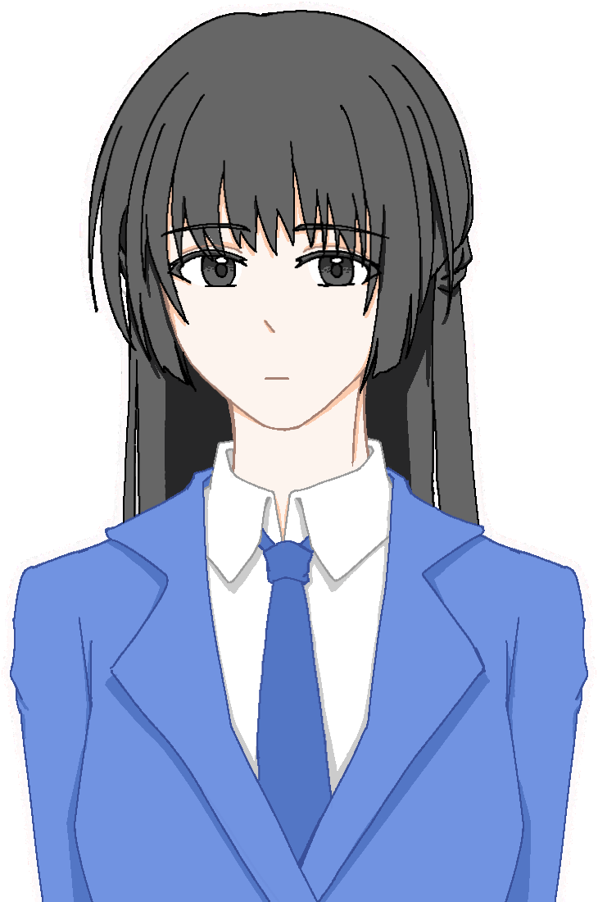
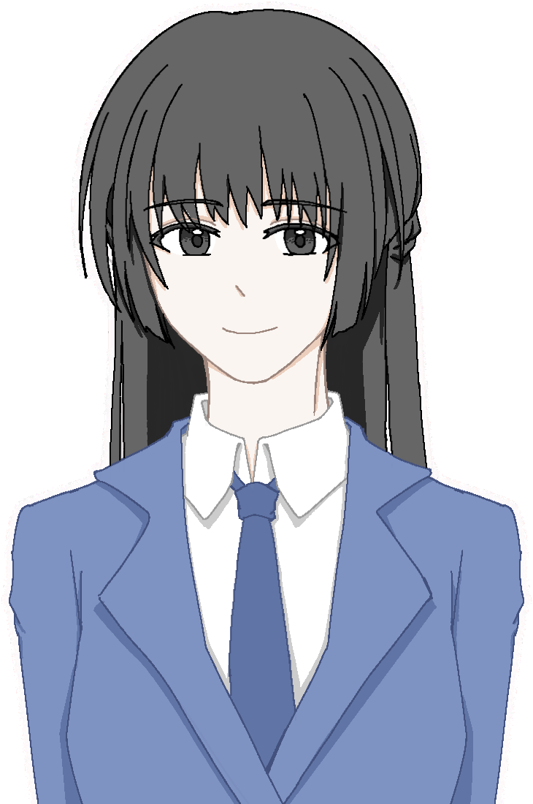

"Why are you doing this?"
"Hmmm......Why?"
"It's just a really ordinary runaway from home."
Her facial expression looks joyful, as if she is telling a story that has nothing to do with herself.
"By the way, I assume that you are also interested in this: those rumours, most of them are true."
"Kind of ridiculous, isn't it?"
Her reason was no more than she needed a runaway. I never find that ridiculous.
I stared at her face. Her face still looks horribly gray. What's worse, the colors behind her have disappeared as well.